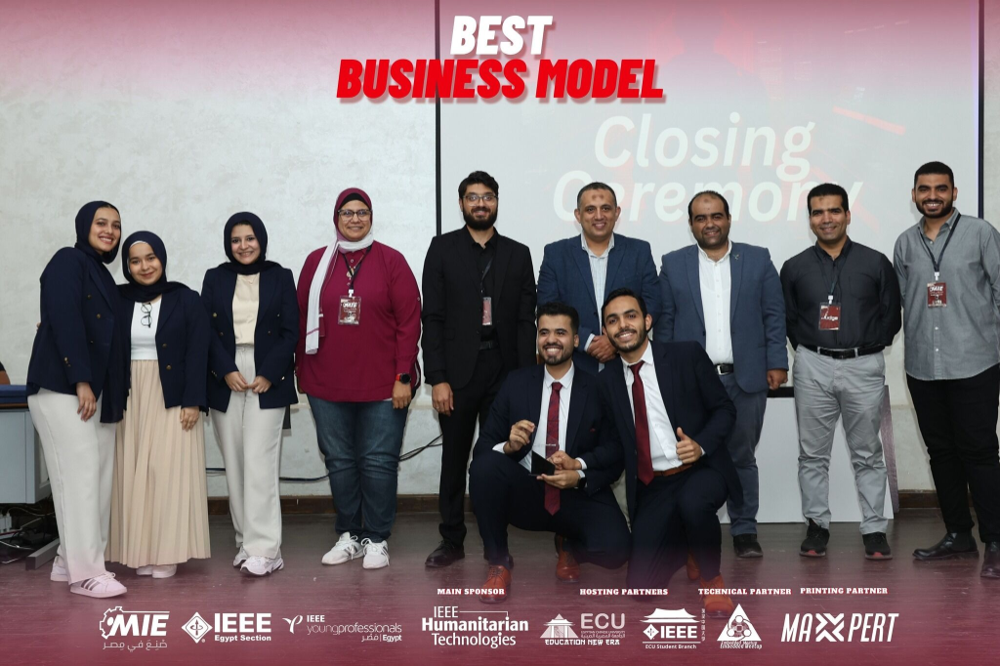
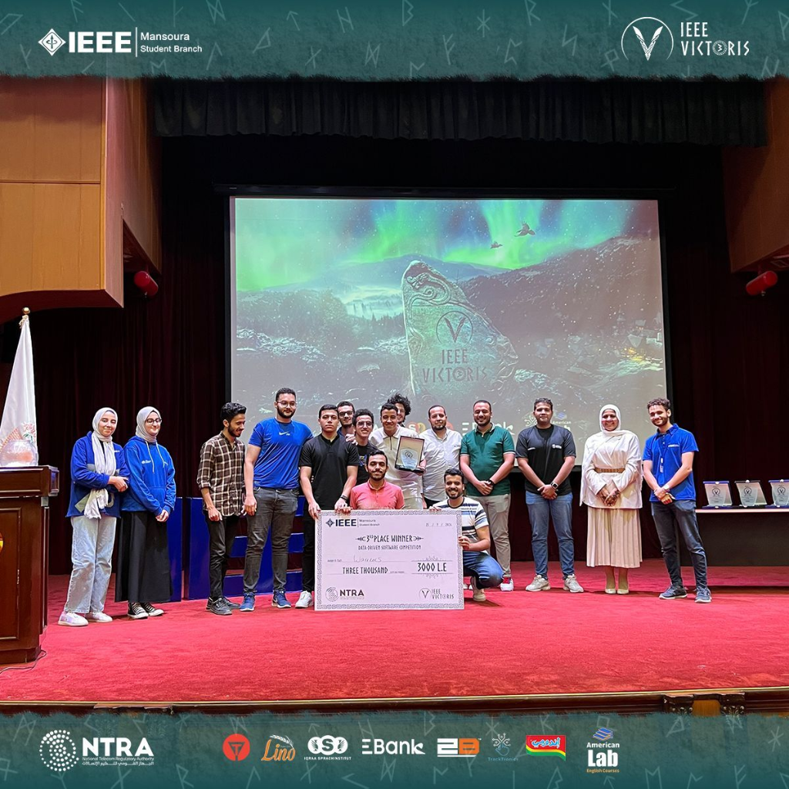
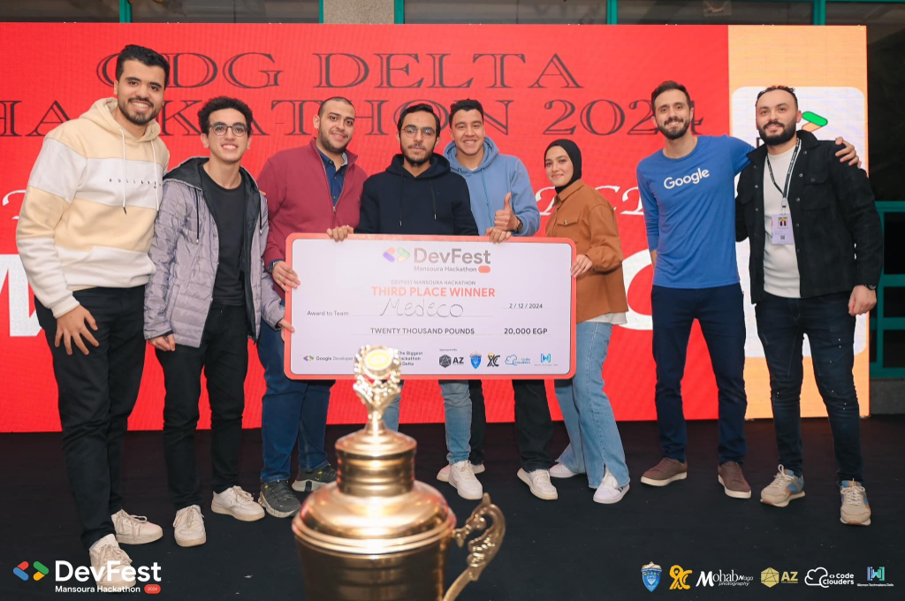

🏆 Best Business Model

Made In Egypt (MIE)
Awarded Best Business Model for the Roshtty medical prescription system, bridging technical and business approaches to help graduates convert projects into startups.
Transforming complex datasets into actionable insights with Power BI, ETL pipelines, machine learning, and cloud-based AI solutions.
CS graduate, data enthusiast, and builder of intelligent systems — on a mission to turn raw data into real decisions.
I'm a Data & BI Solutions Engineer and Computer Science graduate from Mansoura University with a GPA of 3.45/4.0. Currently training at ITI Mansoura in the Data & BI Solutions track.
I ranked in the Top 5% of my class and achieved a perfect 200/200 on my Graduation Project. I specialize in Power BI dashboards, ETL pipelines, DAX analytics, and cloud-based AI deployments on Microsoft Azure.
Hands-on training across BI, machine learning, and cloud deployment at Egypt's leading technical institutes.
Designing interactive Power BI dashboards to visualize KPIs and operational trends. Engineering ETL pipelines with Power Query, building advanced DAX measures for multidimensional reporting, and developing automation tools using Power Automate and PowerApps.
Developed supervised, unsupervised, and reinforcement learning models on real-world datasets. Deployed ML solutions on Microsoft Azure and implemented deep learning with TensorFlow & PyTorch including computer vision and NLP via transfer learning.
Competing nationally and proving technical excellence under pressure — from healthcare AI to software engineering.

Awarded Best Business Model for the Roshtty medical prescription system, bridging technical and business approaches to help graduates convert projects into startups.

A 1-month intensive competition in Software Engineering and AI, combining mentorship, technical challenges, and on-site presentations evaluated by industry experts.

Google Developer Groups hackathon focused on innovative real-world solutions. Demonstrated technical creativity and excellence in a high-pressure competitive environment.
A full-stack data toolkit — from dashboard design and ETL pipelines to machine learning and cloud deployment.
Business intelligence tools for visual storytelling and KPI reporting
Workflow automation and low-code enterprise applications
Building, training, and deploying intelligent models at scale
Core languages for data pipelines and application development
Cloud-native deployment and infrastructure as code
End-to-end data applications and scientific computing libraries
Real-world applications spanning OCR, NLP, and business analytics — built from research to production deployment.
AI-powered OCR that interprets handwritten medical prescriptions. Built with Flask, advanced image preprocessing (deskewing, noise reduction, thresholding), and Google Gemini API. Deployed on Microsoft Azure with structured JSON outputs and confidence scoring.
Real-time multilingual NLP solution integrating Whisper ASR, Distilled BERT, and Llama 3.1. Implements Retrieval-Augmented Generation (RAG) using FAISS for scalable review analysis across multiple languages.
A five-page interactive Tableau platform replacing scattered reports with a decision-ready analytics hub. Covers revenue, profitability, customer behavior, and product performance with real-time filtering and dashboard actions.
Built an end-to-end Power BI analytics solution for a restaurant chain, featuring five dashboards for executive, sales, operations, customer, and financial insights. Developed advanced DAX metrics (MoM, YoY, profit, segmentation), implemented problem detection panels, and applied row-level security (RLS) for role-based access and decision support.
Sharpening algorithmic intuition daily — every solution documented with approach, complexity, and edge cases.
Actively solving LeetCode and Codeforces problems across arrays, strings, dynamic programming, SQL, and more. Every solution in the repository includes a detailed README explaining the approach, time/space complexity, and edge cases.
View Repository LeetCode ProfileOpen to opportunities in Data Engineering, Business Intelligence, and Machine Learning. Let's build something impactful together.